3-2-yum精讲
任务背景
开发团队需要一套数据库服务器环境来测程序，现在需要运维人员协助在测试机Centos7.6上安装好==MySQL-5.6.43==版本用于前期迁移准备工作
同时==配置好本地yum源和外网源==方便后续软件包安装。
任务要求
- 配置本地yum源和网络yum源
- 安装MySQL软件，版本为==5.6.43==
任务拆解
- yum源配置
- MySQL数据库软件安装
课程目标
- [x] 了解yum源安装软件包的优点
- [x] 了解常见的外网yum源
- [ ] ==掌握本地和网络yum源的配置==
- [ ] 能够使用yum工具安装软件包
知识储备
一、yum源概述
㈠ yum源的作用
==软件包管理器==，类似360的软件管家
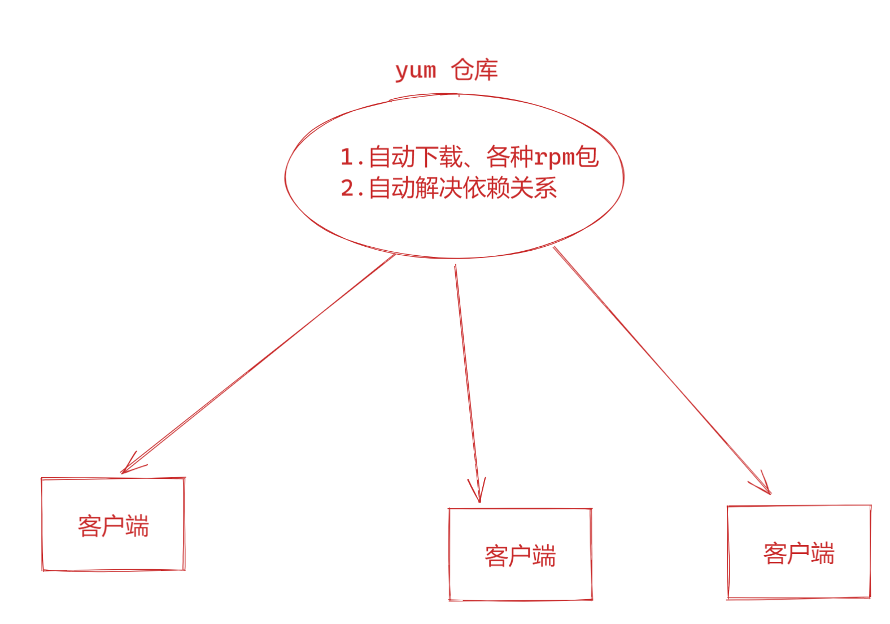
㈡ yum源的优点
能够==解决软件包之间的依赖关系==，提高运维人员的工作效率。
㈢ yum源的分类
1、本地yum源
yum仓库在==本地==（系统光盘/镜像文件）
2、网络yum源
yum仓库不在本地，在==远程==服务器
国内较知名的网络源（aliyun源，163源，sohu源，知名大学开源镜像等）
阿里源：https://opsx.alibaba.com/mirror
网易源：http://mirrors.163.com/
搜狐源：http://mirrors.sohu.com/
国外较知名的网络源（centos源、redhat源、扩展epel源等）
==特定软件==相关的网络源（Nginx、MySQL、Zabbix等）
二、yum源配置(重点)
㈠ 本地yum源配置
1、本地需要有仓库
① 虚拟光驱装载镜像文件
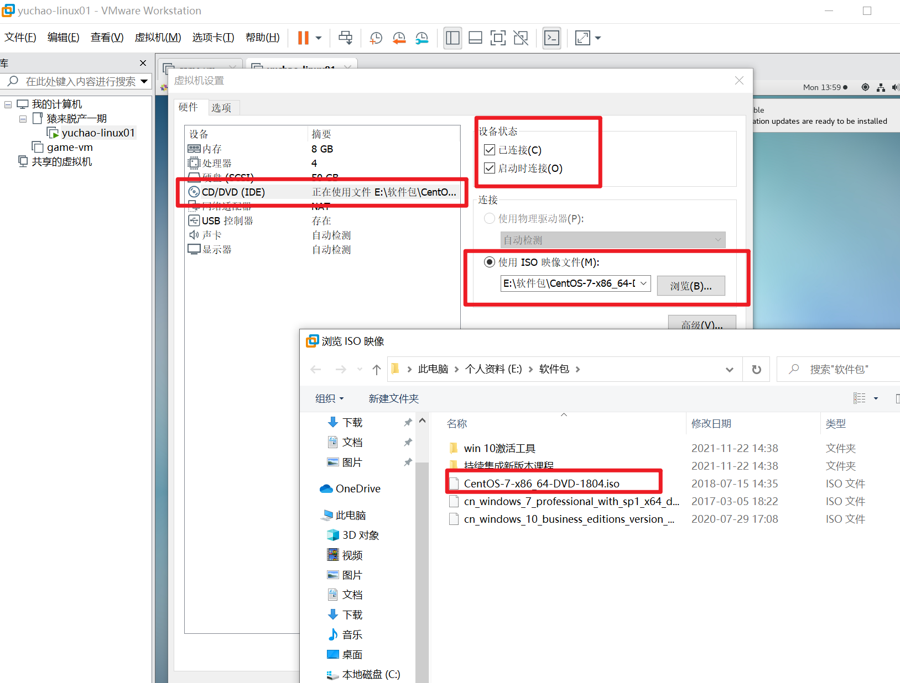
② 将光盘挂载到本地目录
/mnt 操作系统默认的挂载点
mount [挂载选项] 需要挂载的设备 挂载点
手动挂载光盘到/mnt
lsblk 查看当前系统所有的设备文件
mount -o ro /dev/sr0 /mnt
注意：手动挂载后，系统重启需要再次手动挂载
# mount -o ro /dev/sr0 /mnt
选项说明：
-o ：挂载方式，ro代表以readonly=>只读的方式进行挂载
rw代表以read/write=>读写的方式进行挂载
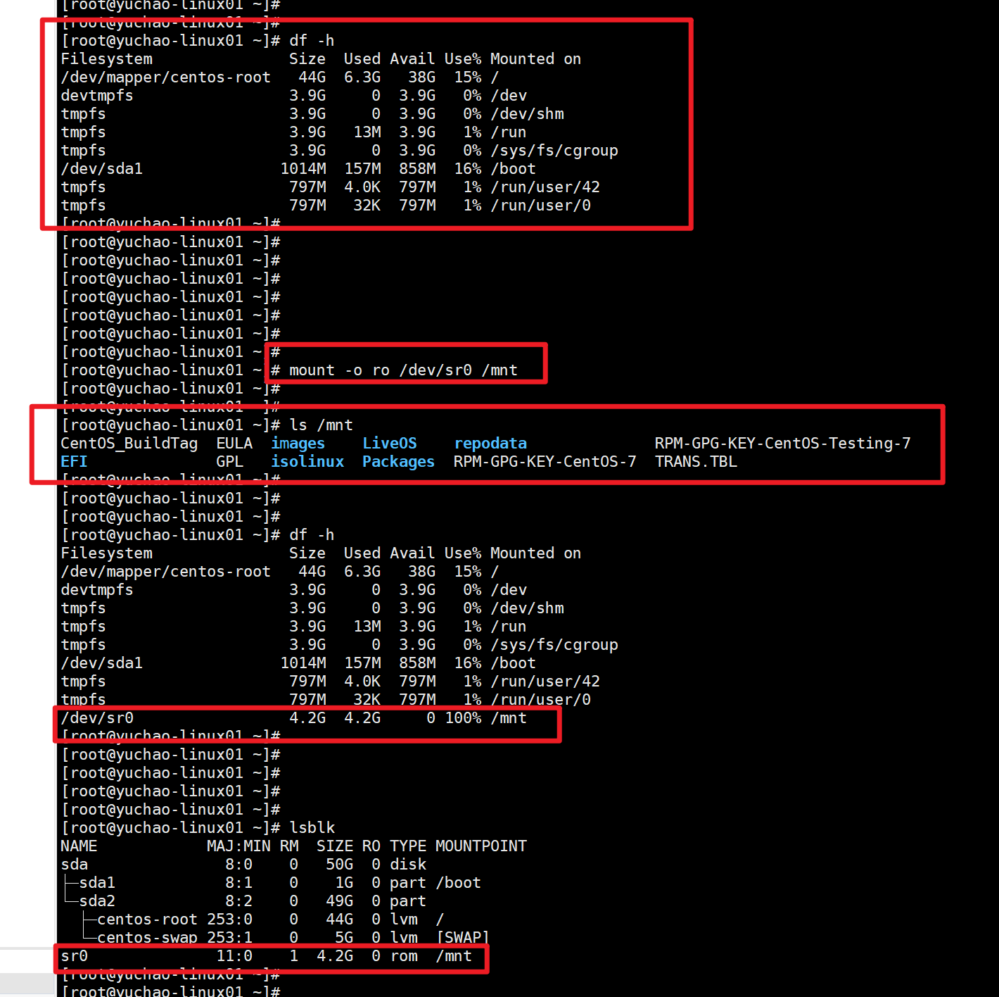
③ 开机自动挂载
/etc/rc.local，属于系统的开机启动文件。系统启动后，会自动加载并执行这个文件
修改/etc/rc.local文件
/etc/rc.local 操作系统开机最后读取的一个文件
写入一行配置信息到该文件
echo "mount -o ro /dev/sr0 /mnt" >> /etc/rc.local
如下
[root@yuchao-linux01 ~]# echo "mount -o ro /dev/sr0 /mnt" >> /etc/rc.local
[root@yuchao-linux01 ~]#
[root@yuchao-linux01 ~]#
[root@yuchao-linux01 ~]# cat /etc/rc.local
#!/bin/bash
# THIS FILE IS ADDED FOR COMPATIBILITY PURPOSES
#
# It is highly advisable to create own systemd services or udev rules
# to run scripts during boot instead of using this file.
#
# In contrast to previous versions due to parallel execution during boot
# this script will NOT be run after all other services.
#
# Please note that you must run 'chmod +x /etc/rc.d/rc.local' to ensure
# that this script will be executed during boot.
touch /var/lock/subsys/local
mount -o ro /dev/sr0 /mnt
[root@yuchao-linux01 ~]#
2、修改配置文件指向本地仓库
① 备份yum仓库文件
[root@yuchao-linux01 ~]# cd /etc/yum.repos.d/
[root@yuchao-linux01 yum.repos.d]# tar -zcf repo.tgz *.repo
[root@yuchao-linux01 yum.repos.d]#
[root@yuchao-linux01 yum.repos.d]# ls
CentOS-Base.repo CentOS-Debuginfo.repo CentOS-Sources.repo epel-testing.repo rpmorphan-1.14-1.noarch.rpm
CentOS-Base.repo.bak CentOS-fasttrack.repo CentOS-Vault.repo local.repo
CentOS-CR.repo CentOS-Media.repo epel.repo repo.tgz
[root@yuchao-linux01 yum.repos.d]#
[root@yuchao-linux01 yum.repos.d]# rm -rf *.repo
[root@yuchao-linux01 yum.repos.d]#
[root@yuchao-linux01 yum.repos.d]#
[root@yuchao-linux01 yum.repos.d]# ls
CentOS-Base.repo.bak repo.tgz rpmorphan-1.14-1.noarch.rpm
[root@yuchao-linux01 yum.repos.d]#
① 配置文件存放路径
[root@yuchao-linux01 ~]#
[root@yuchao-linux01 ~]# ls /etc/yum.repos.d/ -d
/etc/yum.repos.d/
② 修改配置文件
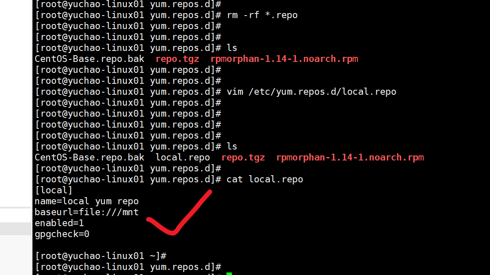
[root@yuchao-linux01 ~]# ls /etc/yum.repos.d/ -d
/etc/yum.repos.d/
[root@yuchao-linux01 ~]# vim /etc/yum.repos.d/local.repo
[root@yuchao-linux01 ~]#
[root@yuchao-linux01 ~]#
[root@yuchao-linux01 ~]# cat /etc/yum.repos.d/local.repo
[local]
name=local yum repo
baseurl=file:///mnt
enabled=1
gpgcheck=0
[root@yuchao-linux01 ~]#
看看系统给的repo语法是什么
说明：
baseurl=http://nginx.org/packages/centos/7/$basearch/
$basearch表示当前系统cpu架构，如果系统是32位会找32位软件包；如果64位会找64位软件包
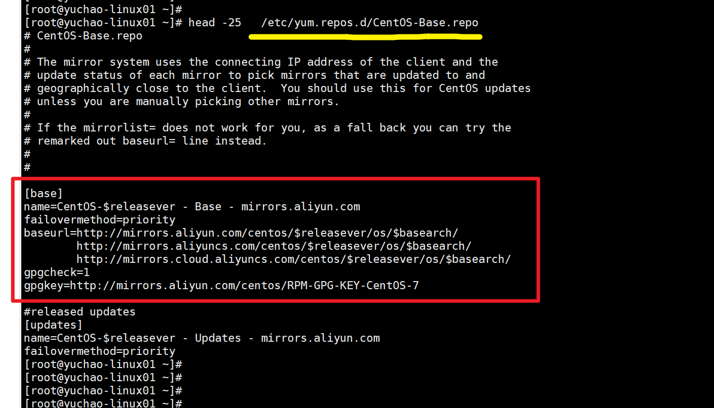
③验证本地yum源
[root@yuchao-linux01 yum.repos.d]#
[root@yuchao-linux01 yum.repos.d]# yum clean all
Loaded plugins: fastestmirror, langpacks
Bad id for repo: root@yuchao-linux01 ~, byte = @ 4
Cleaning repos: local
Cleaning up everything
Maybe you want: rm -rf /var/cache/yum, to also free up space taken by orphaned data from disabled or removed repos
Cleaning up list of fastest mirrors
[root@yuchao-linux01 yum.repos.d]#
[root@yuchao-linux01 yum.repos.d]#
[root@yuchao-linux01 yum.repos.d]# yum makecache
Loaded plugins: fastestmirror, langpacks
Bad id for repo: root@yuchao-linux01 ~, byte = @ 4
Determining fastest mirrors
local | 3.6 kB 00:00:00
(1/4): local/group_gz | 166 kB 00:00:00
(2/4): local/filelists_db | 3.1 MB 00:00:00
(3/4): local/primary_db | 3.1 MB 00:00:00
(4/4): local/other_db | 1.3 MB 00:00:00
Metadata Cache Created
[root@yuchao-linux01 yum.repos.d]#
[root@yuchao-linux01 yum.repos.d]#
[root@yuchao-linux01 yum.repos.d]#
[root@yuchao-linux01 yum.repos.d]# yum list|wc -l
Bad id for repo: root@yuchao-linux01 ~, byte = @ 4
4037
[root@yuchao-linux01 yum.repos.d]#
# 重新安装一个软件，如
[root@yuchao-linux01 yum.repos.d]# yum reinstall lrzsz
㈡ 网络yum源配置
网络YUM源的分类
① 使用比较知名平台的YUM源（阿里云、腾讯、清华）
② 有些特定软件（如Nginx、MySQL、Zabbix等等）需要根据官网文档自定义网络YUM源
例如我们挂载的mnt光盘镜像，找不到nginx软件的rmp包。
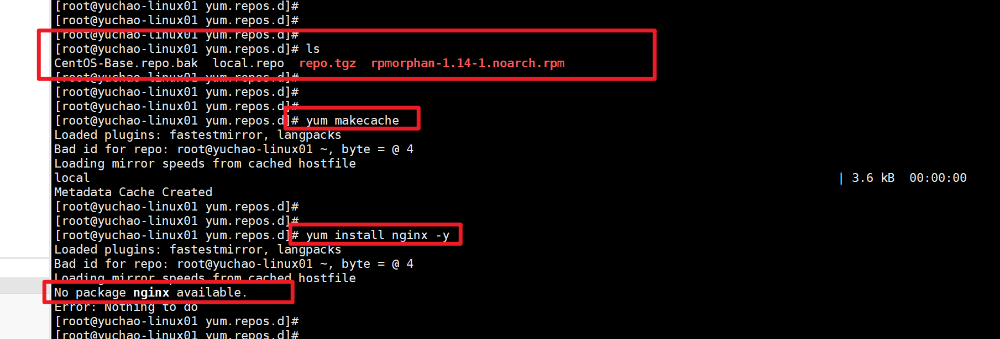
因此需要额外配置yum仓库，去寻找我们需要的nginx这个软件包。
1、主机需要访问互联网
说明：如果配置的是==外网源==，当前主机需要访问互联网。
2、修改配置文件指向网络仓库
① 特定软件网络源
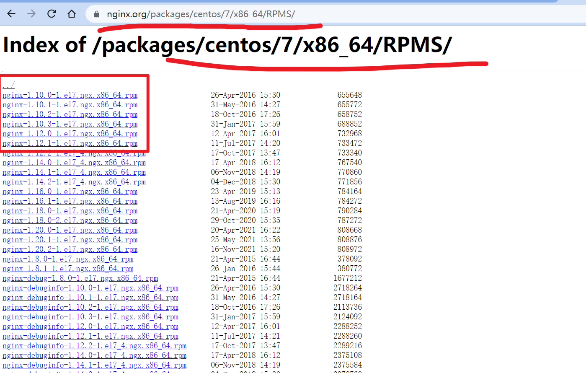
[root@yuchao-linux01 yum.repos.d]# cat nginx.repo
[nginx]
name=nginx repo
baseurl=http://nginx.org/packages/centos/7/x86_64/
gpgcheck=0
enabled=1
[root@yuchao-linux01 yum.repos.d]#
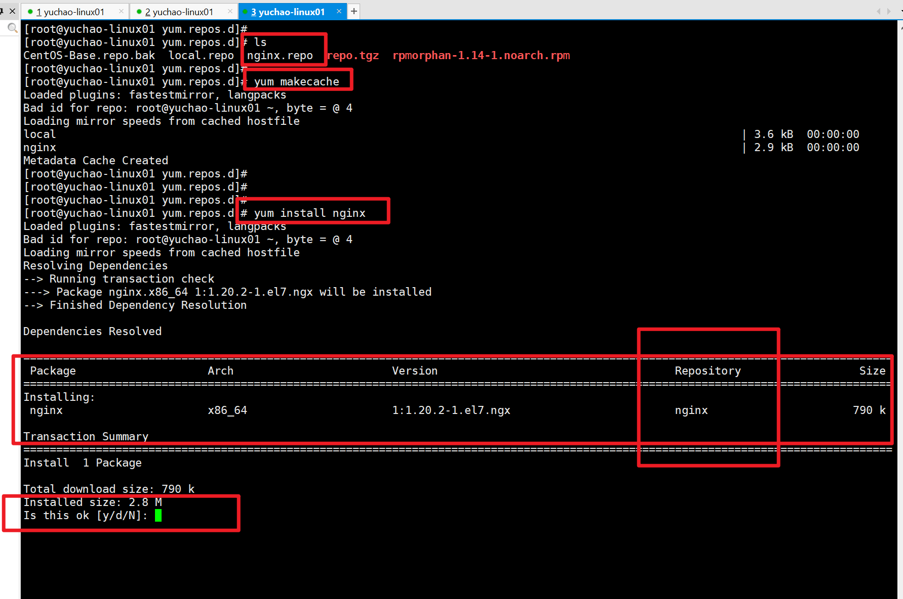
同理，配置mysql的yum源，也是这样。
② 基础软件网络源（重点）
base源
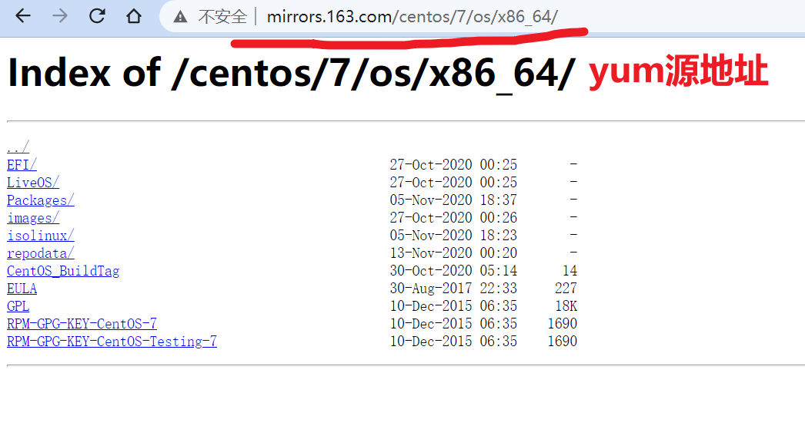
简易配置方式，直接使用阿里云源
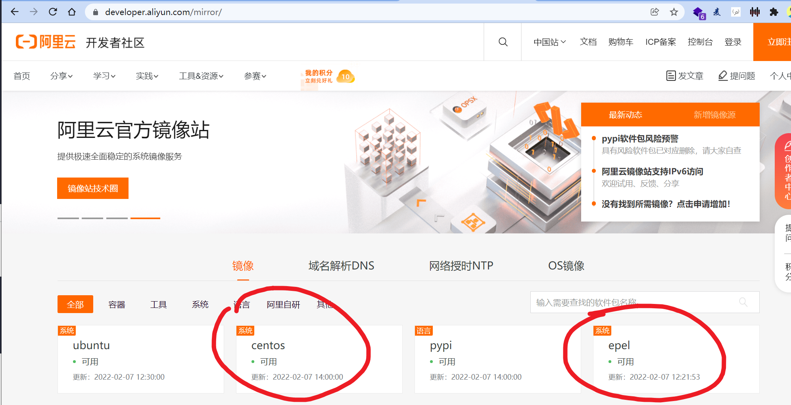
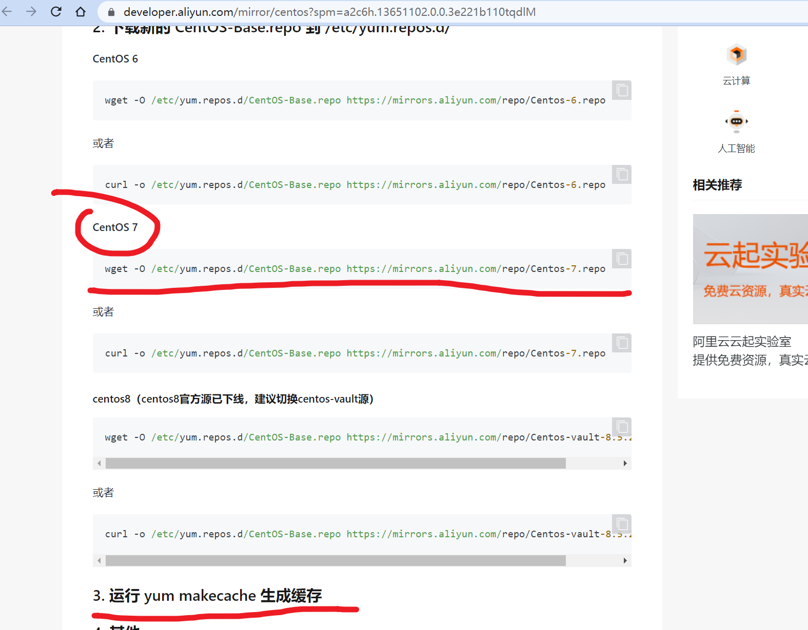
[root@yuchao-linux01 yum.repos.d]# wget -O /etc/yum.repos.d/CentOS-Base.repo https://mirrors.aliyun.com/repo/Centos-7.repo
--2022-02-07 14:36:20-- https://mirrors.aliyun.com/repo/Centos-7.repo
Resolving mirrors.aliyun.com (mirrors.aliyun.com)... 125.39.43.241, 125.39.43.242, 125.39.43.248, ...
Connecting to mirrors.aliyun.com (mirrors.aliyun.com)|125.39.43.241|:443... connected.
HTTP request sent, awaiting response... 200 OK
Length: 2523 (2.5K) [application/octet-stream]
Saving to: ‘/etc/yum.repos.d/CentOS-Base.repo’
100%[==========================================================================================>] 2,523 --.-K/s in 0s
2022-02-07 14:36:21 (534 MB/s) - ‘/etc/yum.repos.d/CentOS-Base.repo’ saved [2523/2523]
[root@yuchao-linux01 yum.repos.d]#
[root@yuchao-linux01 yum.repos.d]#
[root@yuchao-linux01 yum.repos.d]#
[root@yuchao-linux01 yum.repos.d]# ls
CentOS-Base.repo CentOS-Base.repo.bak local.repo nginx.repo repo.tgz rpmorphan-1.14-1.noarch.rpm
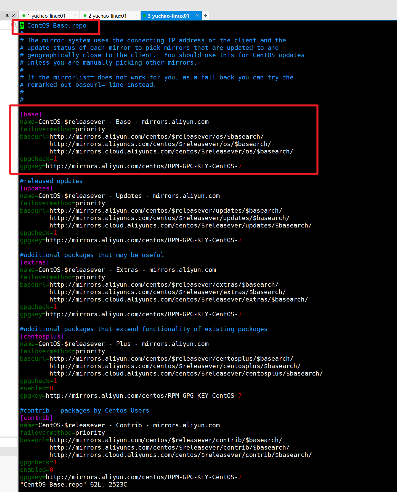
epel源
简介
EPEL (Extra Packages for Enterprise Linux), 是由 Fedora Special Interest Group 维护的 Enterprise Linux（RHEL、CentOS）中经常用到的包。
下载地址：https://mirrors.aliyun.com/epel/
[root@yuchao-linux01 yum.repos.d]# wget -O /etc/yum.repos.d/epel.repo http://mirrors.aliyun.com/repo/epel-7.repo
--2022-02-07 14:39:28-- http://mirrors.aliyun.com/repo/epel-7.repo
Resolving mirrors.aliyun.com (mirrors.aliyun.com)... 125.39.43.242, 125.39.43.248, 125.39.43.236, ...
Connecting to mirrors.aliyun.com (mirrors.aliyun.com)|125.39.43.242|:80... connected.
HTTP request sent, awaiting response... 200 OK
Length: 664 [application/octet-stream]
Saving to: ‘/etc/yum.repos.d/epel.repo’
100%[==========================================================================================>] 664 --.-K/s in 0s
2022-02-07 14:39:28 (212 MB/s) - ‘/etc/yum.repos.d/epel.repo’ saved [664/664]
[root@yuchao-linux01 yum.repos.d]#
[root@yuchao-linux01 yum.repos.d]# ls
CentOS-Base.repo CentOS-Base.repo.bak epel.repo local.repo nginx.repo repo.tgz rpmorphan-1.14-1.noarch.rpm
[root@yuchao-linux01 yum.repos.d]#
生成缓存，可以使用了
yum clean all
yum makecache
③ 软件指定的源
- 刚才我们发现，在系统iso镜像光盘文件里，找不到如nginx这样的软件包
- 超哥教的是，使用阿里云yum源，公共yum仓库以及epel仓库，可以找到nginx软件。
- 问题是，如果阿里云的yum仓库更新不及时，或者你压根都不信任阿里云yum仓库
- 你还可以直接选择该软件官网提供的yum仓库，可以下载rpm包。
- 如直接配置nginx官网的仓库url。
3、安装软件，自动生成repo仓库
我们发现使用yum仓库，就是
1.写repo文件
2.确保可以上网
3.yum自动去repo文件里的url找软件。
这个安装方法是，通过安装xx.rpm，自动生成repo，省的你自己写了。
如mysql官网提供的这个rpm，安装即可生成repo文件。
wget https://repo.mysql.com/mysql-community-release-el7.rpm
rpm -ivh mysql-community-release-el7.rpm
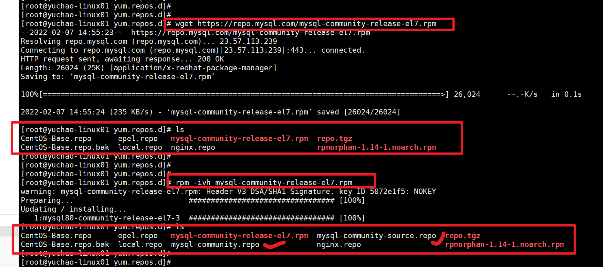
卸载该软件，repo文件也会自动删除
[root@yuchao-linux01 yum.repos.d]# rpm -e mysql80-community-release
[root@yuchao-linux01 yum.repos.d]#
[root@yuchao-linux01 yum.repos.d]#
[root@yuchao-linux01 yum.repos.d]# ls
CentOS-Base.repo epel.repo mysql-community-release-el7.rpm repo.tgz
CentOS-Base.repo.bak local.repo nginx.repo
4、总结
- 本地yum源配置核心
- 本地需要有软件仓库——>光盘挂载到系统某个目录上(
mount -o ro /dev/sr0 /mnt) - 告诉yum工具去哪个仓库找软件包——>修改配置（
/etc/yum.repos.d/xxx.repo）
- 本地需要有软件仓库——>光盘挂载到系统某个目录上(
- 网络yum源配置核心
- 当前主机必须能够访问互联网（外网源）
- 告诉yum工具去哪个仓库找软件包——>修改配置（
/etc/yum.repos.d/xxx.repo） - ==配置方法2种==：
- 直接修改配置文件；
- 下载rpm包，安装软件包自动帮我配置
- 如果多个仓库里有相同的软件包，==高版本优先==
- 多个yum源，可以指定优先级，但是==需要安装插件==，修改配置文件完成
㈣ 自建yum仓库
思考1：什么情况下需要自建yum仓库？（我们需要离线安装某软件包时，在一些企业里的断网环境）
其实说白了，yum仓库是什么？就是一个存放了很多rpm软件包的地儿，然后你告诉yum去这里找就行。
思路：
- 创建一个目录来保存相应的软件
- 需要在该目录下生成repodata目录
- 修改配置文件指向本地自建仓库
1、步骤
1.创建好一个目录
[root@yuchao-linux01 yum.repos.d]# mkdir /software
2.准备好一些用于测试的软件包
[root@yuchao-linux01 yum.repos.d]# mkdir /software
[root@yuchao-linux01 yum.repos.d]# ls /mnt
CentOS_BuildTag EULA images LiveOS repodata RPM-GPG-KEY-CentOS-Testing-7
EFI GPL isolinux Packages RPM-GPG-KEY-CentOS-7 TRANS.TBL
[root@yuchao-linux01 yum.repos.d]#
[root@yuchao-linux01 yum.repos.d]#
[root@yuchao-linux01 yum.repos.d]# cp /mnt/Packages/sam
samba-4.7.1-6.el7.x86_64.rpm samba-winbind-4.7.1-6.el7.x86_64.rpm
samba-client-4.7.1-6.el7.x86_64.rpm samba-winbind-modules-4.7.1-6.el7.x86_64.rpm
samba-client-libs-4.7.1-6.el7.x86_64.rpm samyak-devanagari-fonts-1.2.2-12.el7.noarch.rpm
samba-common-4.7.1-6.el7.noarch.rpm samyak-fonts-common-1.2.2-12.el7.noarch.rpm
samba-common-libs-4.7.1-6.el7.x86_64.rpm samyak-gujarati-fonts-1.2.2-12.el7.noarch.rpm
samba-common-tools-4.7.1-6.el7.x86_64.rpm samyak-malayalam-fonts-1.2.2-12.el7.noarch.rpm
samba-krb5-printing-4.7.1-6.el7.x86_64.rpm samyak-oriya-fonts-1.2.2-12.el7.noarch.rpm
samba-libs-4.7.1-6.el7.x86_64.rpm samyak-tamil-fonts-1.2.2-12.el7.noarch.rpm
samba-python-4.7.1-6.el7.x86_64.rpm
3.拷贝如下软件到自定义的目录
[root@yuchao-linux01 yum.repos.d]# cp /mnt/Packages/samba* /software/
[root@yuchao-linux01 yum.repos.d]# cp /mnt/Packages/libevent-2.0.21-4.el7.x86_64.rpm /software/
[root@yuchao-linux01 yum.repos.d]# cp /mnt/Packages/libtalloc-2.1.10-1.el7.x86_64.rpm /software/
[root@yuchao-linux01 yum.repos.d]#
[root@yuchao-linux01 yum.repos.d]#
4.在自定义的目录下，创建repodata，让他成为一个yum可以识别的仓库
[root@yuchao-linux01 software]# yum install createrepo -y
Loaded plugins: fastestmirror, langpacks
Bad id for repo: root@yuchao-linux01 ~, byte = @ 4
Loading mirror speeds from cached hostfile
* base: mirrors.aliyun.com
* extras: mirrors.aliyun.com
* updates: mirrors.aliyun.com
Package createrepo-0.9.9-28.el7.noarch already installed and latest version
Nothing to do
[root@yuchao-linux01 software]#
[root@yuchao-linux01 software]#
[root@yuchao-linux01 software]# createrepo /software/
Spawning worker 0 with 4 pkgs
Spawning worker 1 with 3 pkgs
Spawning worker 2 with 3 pkgs
Spawning worker 3 with 3 pkgs
Workers Finished
Saving Primary metadata
Saving file lists metadata
Saving other metadata
Generating sqlite DBs
Sqlite DBs complete
[root@yuchao-linux01 software]#
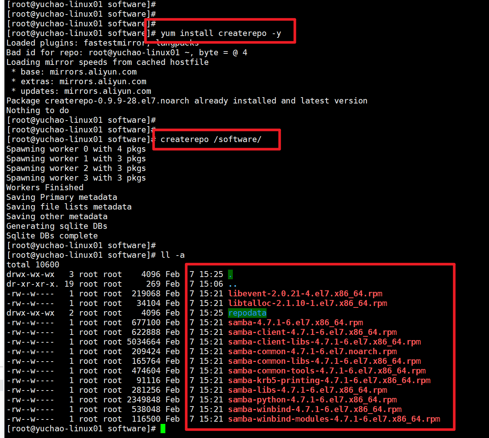
5.关闭所有的网络仓库，让yum只能读取自建的yum仓库
[root@yuchao-linux01 software]# cd /etc/yum.repos.d/
[root@yuchao-linux01 yum.repos.d]# ls
CentOS-Base.repo epel.repo mysql-community-release-el7.rpm repo.tgz
CentOS-Base.repo.bak local.repo nginx.repo rpmorphan-1.14-1.noarch.rpm
[root@yuchao-linux01 yum.repos.d]#
[root@yuchao-linux01 yum.repos.d]#
[root@yuchao-linux01 yum.repos.d]# mkdir bak-repo
[root@yuchao-linux01 yum.repos.d]#
[root@yuchao-linux01 yum.repos.d]# mv *.repo bak-repo/
[root@yuchao-linux01 yum.repos.d]# ls
bak-repo CentOS-Base.repo.bak mysql-community-release-el7.rpm repo.tgz rpmorphan-1.14-1.noarch.rpm
[root@yuchao-linux01 yum.repos.d]#
[root@yuchao-linux01 yum.repos.d]#
6.自建repo文件
[root@yuchao-linux01 yum.repos.d]#
[root@yuchao-linux01 yum.repos.d]# vim /etc/yum.repos.d/myself.repo
[root@yuchao-linux01 yum.repos.d]#
[root@yuchao-linux01 yum.repos.d]# cat myself.repo
[myself]
name=myself yum repo
enabled=1
baseurl=file:///software
gpgcheck=0
[root@yuchao-linux01 yum.repos.d]#
7.生成yum缓存，加载repo文件
root@yuchao-linux01 yum.repos.d]#
[root@yuchao-linux01 yum.repos.d]# yum clean all
Loaded plugins: fastestmirror, langpacks
Cleaning repos: myself
Cleaning up everything
Maybe you want: rm -rf /var/cache/yum, to also free up space taken by orphaned data from disabled or removed repos
Cleaning up list of fastest mirrors
[root@yuchao-linux01 yum.repos.d]#
[root@yuchao-linux01 yum.repos.d]#
[root@yuchao-linux01 yum.repos.d]# yum mackcache
Loaded plugins: fastestmirror, langpacks
No such command: mackcache. Please use /usr/bin/yum --help
[root@yuchao-linux01 yum.repos.d]#
[root@yuchao-linux01 yum.repos.d]# yum install samba
8.验证samba是否安装
[root@yuchao-linux01 yum.repos.d]# rpm -qi samba
解决需求，安装mysql5.6.43
在超哥讲了这么多知识储备后，现在让你去解决这个需求，会了吗？
1.用本地光盘仓库安装mysql
2.用网络仓库安装mysql
一、配置本地yum源
㈠ 挂载镜像到本地
去除其他无用repo文件先
[root@yuchao-linux01 yum.repos.d]# ls
bak-repo local.repo
[root@yuchao-linux01 yum.repos.d]#
[root@yuchao-linux01 yum.repos.d]#
[root@yuchao-linux01 yum.repos.d]# cat local.repo
[local]
name=local yum repo
baseurl=file:///mnt
enabled=1
gpgcheck=0
[root@yuchao-linux01 ~]#
清空缓存
[root@yuchao-linux01 yum.repos.d]# yum clean all
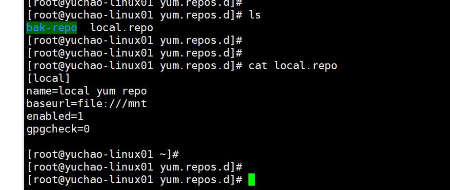
看看是否可以安装mysql，请注意我们要求安装的是指定版本
MySQL-5.6.43
[root@yuchao-linux01 yum.repos.d]# yum install mysql-5.6.43
Loaded plugins: fastestmirror, langpacks
Bad id for repo: root@yuchao-linux01 ~, byte = @ 4
Loading mirror speeds from cached hostfile
No package mysql-5.6.43 available.
Error: Nothing to do
发现本地光盘里是没有这个mysql指定版本的，找不到。
如果你直接安装mysql这个名字的软件包，出现如下情况
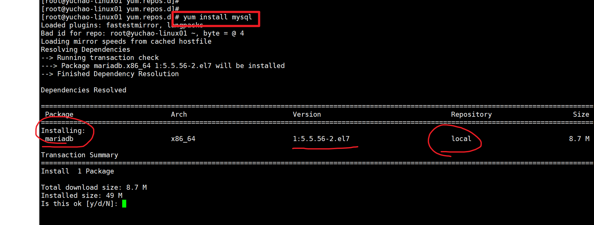
因此，本地光盘源，这个没法解决问题。
二、使用阿里云提供的yum仓库
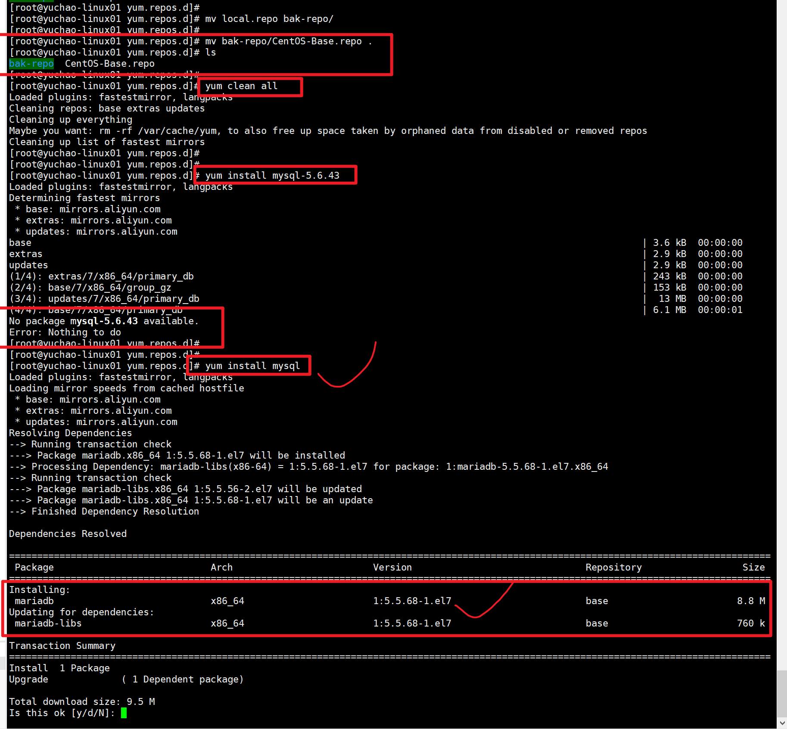
发现阿里云yum仓库默认提供的mysql版本，最高也只到了5.5.68，因此也被排除了。
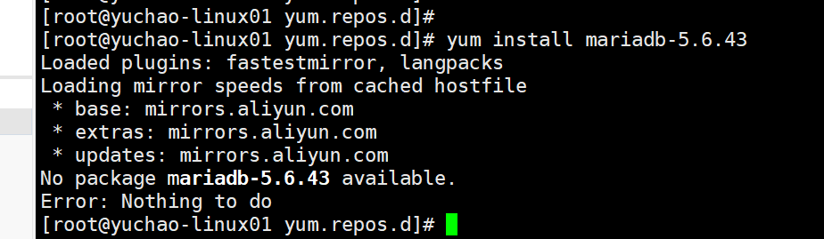
三、配置mysql官网yum仓库
我们会发现，多种配置yum源的方式，是用来解决各种常见下的问题，因此你都得掌握这些技能，能应对工作里不同的场景。
像这个需要安装特定版本的需求，配置官网的yum源，是最靠谱的方式。
1.找到合适你当前服务器的mysql官方仓库
https://dev.mysql.com/downloads/repo/yum/
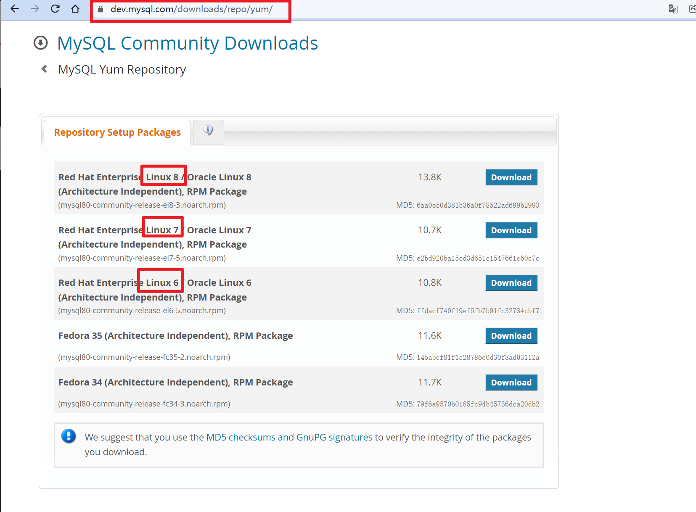
安装mysql官方仓库
[root@yuchao-linux01 yum.repos.d]#
[root@yuchao-linux01 yum.repos.d]#
[root@yuchao-linux01 yum.repos.d]# ls
bak-repo
[root@yuchao-linux01 yum.repos.d]#
[root@yuchao-linux01 yum.repos.d]# wget https://repo.mysql.com//mysql80-community-release-el7-5.noarch.rpm
--2022-02-07 15:48:36-- https://repo.mysql.com//mysql80-community-release-el7-5.noarch.rpm
Resolving repo.mysql.com (repo.mysql.com)... 23.57.113.239
Connecting to repo.mysql.com (repo.mysql.com)|23.57.113.239|:443... connected.
HTTP request sent, awaiting response... 200 OK
Length: 10928 (11K) [application/x-redhat-package-manager]
Saving to: ‘mysql80-community-release-el7-5.noarch.rpm’
100%[==============================================================================================>] 10,928 --.-K/s in 0s
2022-02-07 15:48:38 (357 MB/s) - ‘mysql80-community-release-el7-5.noarch.rpm’ saved [10928/10928]
[root@yuchao-linux01 yum.repos.d]# ls
bak-repo mysql80-community-release-el7-5.noarch.rpm
[root@yuchao-linux01 yum.repos.d]# rpm -ivh mysql80-community-release-el7-5.noarch.rpm
warning: mysql80-community-release-el7-5.noarch.rpm: Header V4 RSA/SHA256 Signature, key ID 3a79bd29: NOKEY
Preparing... ################################# [100%]
Updating / installing...
1:mysql80-community-release-el7-5 ################################# [100%]
[root@yuchao-linux01 yum.repos.d]# ls
bak-repo mysql80-community-release-el7-5.noarch.rpm mysql-community.repo mysql-community-source.repo
[root@yuchao-linux01 yum.repos.d]#
[root@yuchao-linux01 yum.repos.d]#
[root@yuchao-linux01 yum.repos.d]#
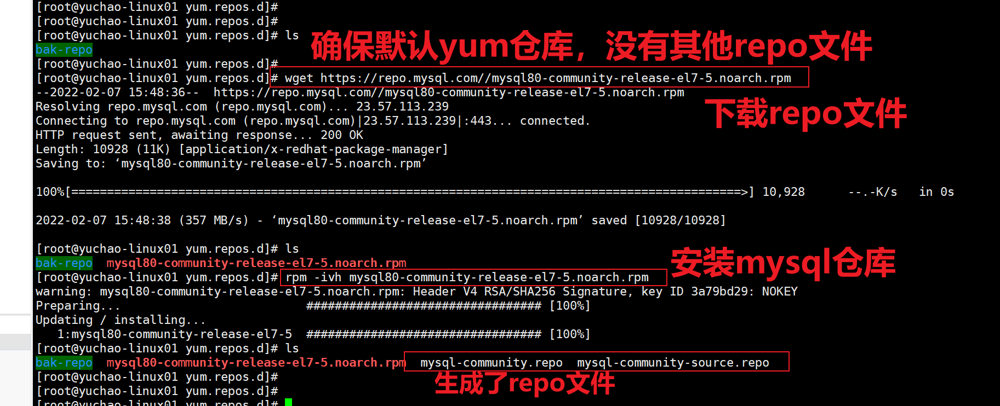
修改mysql仓库url
当前这个mysql仓库的地址指向的是8版本，我们得改为合适我们需要的5.6.43版本。
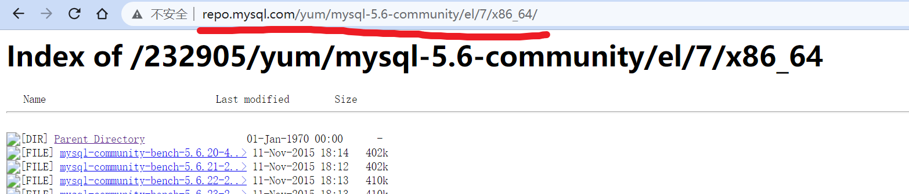
[root@yuchao-linux01 yum.repos.d]# head mysql-community.repo
# yuchao create mysql 5.6
[mysql56]
name=mysql5.6
baseurl=http://repo.mysql.com/yum/mysql-5.6-community/el/7/$basearch
enabled=1
gpgcheck=1
gpgkey=file:///etc/pki/rpm-gpg/RPM-GPG-KEY-mysql
并且需要关闭其他的仓库版本。
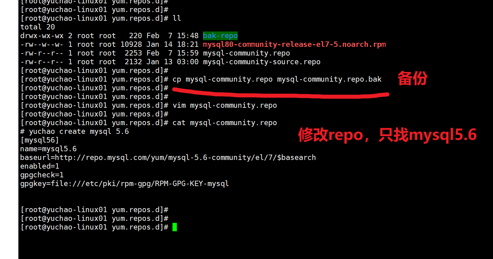
安装mysql-5.6.43版本
确认当前的repo文件有哪些
因为mysql安装，依赖一些系统基础库，因此需要加上本地源，做支撑。
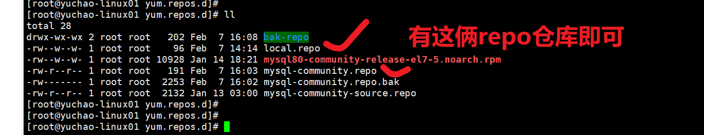
安装过程
[root@yuchao-linux01 ~]# yum install mysql-community-server-5.6.43
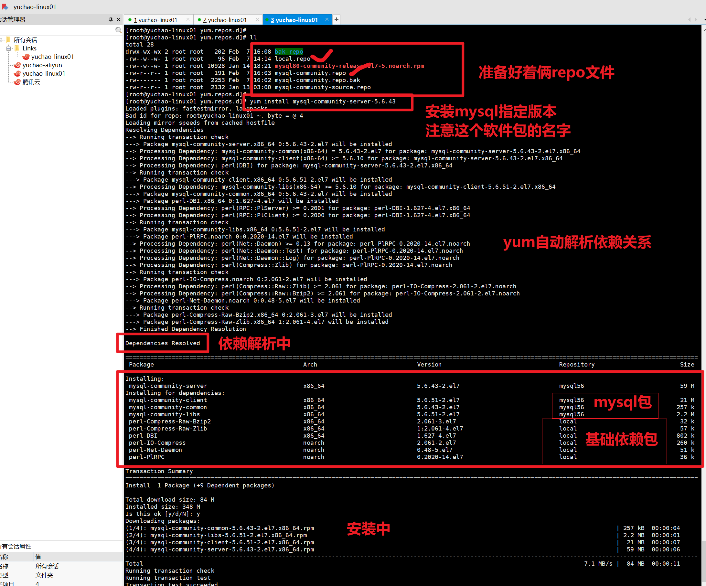
[root@yuchao-linux01 yum.repos.d]# ll
total 28
drwx-wx-wx 2 root root 202 Feb 7 16:08 bak-repo
-rw--w--w- 1 root root 96 Feb 7 14:14 local.repo
-rw--w--w- 1 root root 10928 Jan 14 18:21 mysql80-community-release-el7-5.noarch.rpm
-rw-r--r-- 1 root root 191 Feb 7 16:03 mysql-community.repo
-rw------- 1 root root 2253 Feb 7 16:02 mysql-community.repo.bak
-rw-r--r-- 1 root root 2132 Jan 13 03:00 mysql-community-source.repo
[root@yuchao-linux01 yum.repos.d]#
[root@yuchao-linux01 yum.repos.d]# yum install mysql-community-server-5.6.43
安装成功
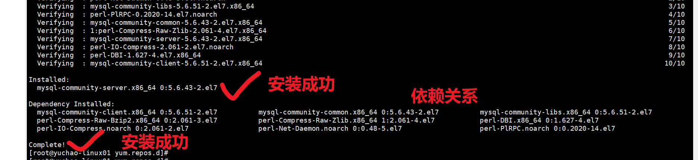
四、做好离线安装工作
因为是网络安装，可能因为网络波动，安装失败，或者过久，因此我们去客户现场，或者其他情况，可以进行离线安装。
因此可以给yum配置好缓存功能，不仅是自动化安装rpm，还能够保存下来rpm包。
[root@yuchao-linux01 yum.repos.d]# cat mysql-community.repo
# yuchao create mysql 5.6
[mysql56]
name=mysql5.6
baseurl=http://repo.mysql.com/yum/mysql-5.6-community/el/7/$basearch
cachedir=/var/cache/yum/$basearch/$releasever
keepcache=1
debuglevel=2
logfile=/var/log/yum.log
enabled=1
gpgcheck=1
gpgkey=file:///etc/pki/rpm-gpg/RPM-GPG-KEY-mysql
[root@yuchao-linux01 yum.repos.d]#
找到rpm包缓存
[root@yuchao-linux01 ~]# ls /var/cache/yum/x86_64/7/mysql56/packages/ -l
total 84560
-rw--w--w- 1 root root 21670016 Jan 5 2021 mysql-community-client-5.6.51-2.el7.x86_64.rpm
-rw--w--w- 1 root root 263164 Jan 19 2019 mysql-community-common-5.6.43-2.el7.x86_64.rpm
-rw--w--w- 1 root root 2347880 Jan 5 2021 mysql-community-libs-5.6.51-2.el7.x86_64.rpm
-rw--w--w- 1 root root 62298664 Jan 19 2019 mysql-community-server-5.6.43-2.el7.x86_64.rpm
任务总结
1.搞清楚需求
2.拆解任务
3.知识储备
4.部署实践
5.验证总结
验证mysql5.6.43使用
[root@yuchao-linux01 yum.repos.d]# systemctl start mysql
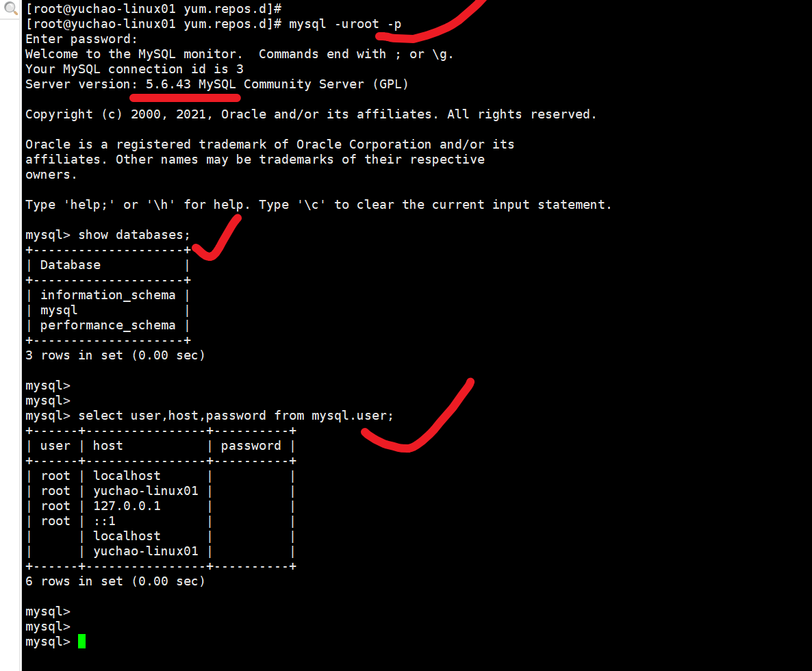
yum扩展补充
1、yum仓库优先级
问：==如果有多个仓库，是否可以设置yum源的优先级设定？==
- 可以设置，但是需要安装插件
yum-plugin-priorities。 - 安装完插件后，只需要在yum源配置文件*.repo里指定优先级即可
- 比如当你同时有epel仓库，又额外指定了某软件repo仓库，默认epel里的软件版本较低，你可以给自定义的软件仓库添加优先级。
1.要先安装优先级插件，通过阿里云仓库装
[root@yuchao-linux01 yum.repos.d]# ll
total 8
drwx-wx-wx 2 root root 289 Feb 7 16:45 bak-repo
-rw--w--w- 1 root root 2523 Dec 26 2020 CentOS-Base.repo
-rw--w--w- 1 root root 664 Dec 26 2020 epel.repo
2.安装优先级插件
[root@yuchao-linux01 yum.repos.d]# yum install -y yum-plugin-priorities
3.只需要修改repo文件，加一个优先级参数即可
[root@yuchao-linux01 yum.repos.d]#
[root@yuchao-linux01 yum.repos.d]# cat local.repo
[local]
name=local yum repo
baseurl=file:///mnt
enabled=1
gpgcheck=0
priority=1
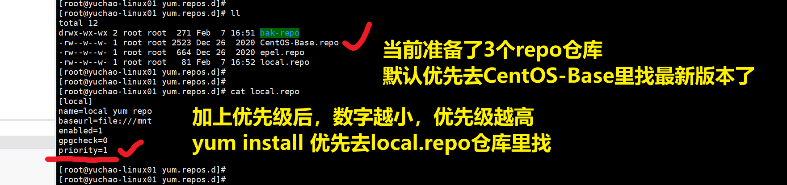
2、yum缓存软件包
问：如果想把从网络源安装的软件包下载到本地方便后续使用，怎么做呢？
- 只需要开启yum缓存功能即可
- 通过修改配置文件开启yum缓存功能，如下：
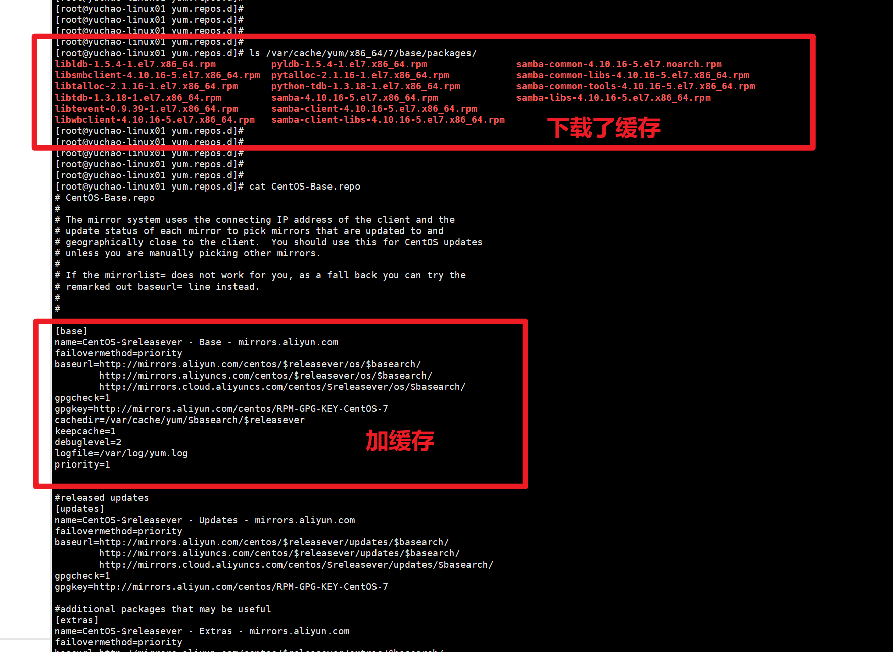
课后复习
rpm命令
rpm -ivh package
安装
rpm -e package
卸载
rpm -Uvh
升级，如果已安装老版本,则升级;如果没安装,则直接安装
rpm -Fvh
升级，如果已安装老版本,则升级;如果没安装,则不安装
rpm -ivh --force
强制安装
rpm --nodeps
忽略依赖关系
rpm -ql
查看已经安装的软件的文件列表
rpm -qlp package.rpm
查看未安装的rpm包里的文件列表
rpm -qa 查看已经安装的所有rpm包
rpm -qd 查看软件的文档列表
rpm -qc 查看软件的配置文件
rpm -qi 查看软件的详细信息
rpm -qf filename
查看文件来自哪个rpm包
rpm --import key_file
导入公钥用于检查rpm文件的签名
rpm -checksig package.rpm
检查rpm包的签名
yum命令
# yum install package -y
默认是安装来自仓库里的软件，指定的是软件名字。多个包空格隔开；-y （取消交互）
# yum install ./xlockmore-5.31-2.el6.x86_64.rpm
或者
# yum localinstall ./xlockmore-5.31-2.el6.x86_64.rpm
安装来自本地指定路径下的rpm包，而不是来自仓库
# yum remove 或者 erase package
卸载软件包
# yum update
更新仓库里所有比本机已经安装过的软件要的软件
# yum update package
指定升级的软件
# yum search mysql
搜索出所有软件名字或者软件描述包含“mysql”关键字的软件
# yum provides "*libmysqlclient.so*"
找出模块由哪些软件包提供
# yum provides "*xeye*"
搜索一个包含xeye关键字的软件包
# yum clean all
清空之前的yum列表缓存
# yum makecache
创建新的缓存
# yum list
列出仓库里的所有软件包
# yum repolist
列出已配置的软件仓库
# yum list|tail
查看未安装的软件包
# yum list |grep 关键字
@代表已经安装成功
# yum list installed
查看已安装的包
# yum grouplist
查看包组
# yum groupinstall "包组"
安装包组
# yum groupremove "包组"
删除包组
# md5sum +包名
直接校验第三方提供的软件包
如何正确获取软件仓库的包名
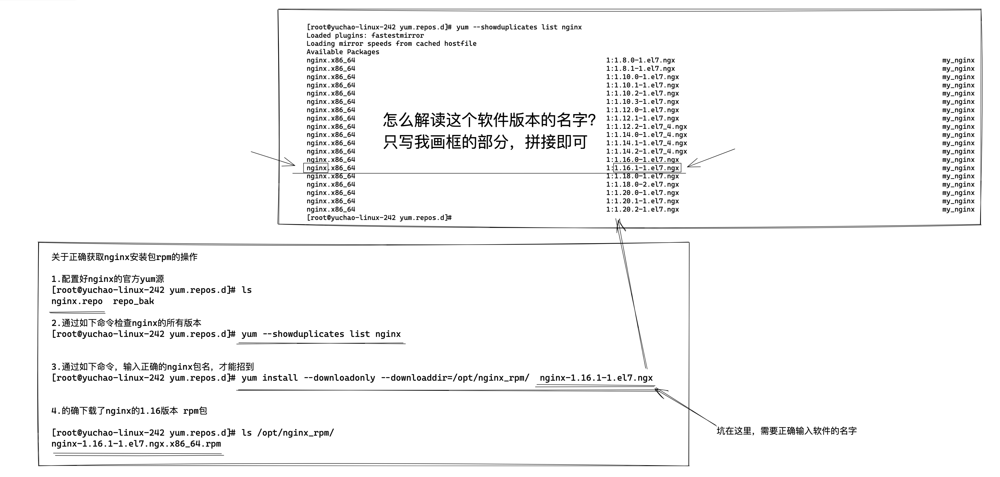
课后作业
1.CentOS默认是国外的yum源，为了加速下载，请配置国内公共yum源。
2.开发人员需要安装一些额外的软件包，需要运维协助配置epel源。
3.完成于超老师所教的所有yum源配置方法，完成笔记。